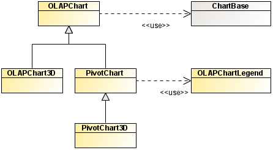

The OLAP and Pivot chart classes rely on the Adobe® Flash® Builder™ 4 charting classes inheriting from ChartBase as shown in the following figure. This
allows you to use any chart from Adobe Flash Builder 4 or IBM® ILOG Elixir 3D Chart to configure
your OLAP or Pivot chart.
